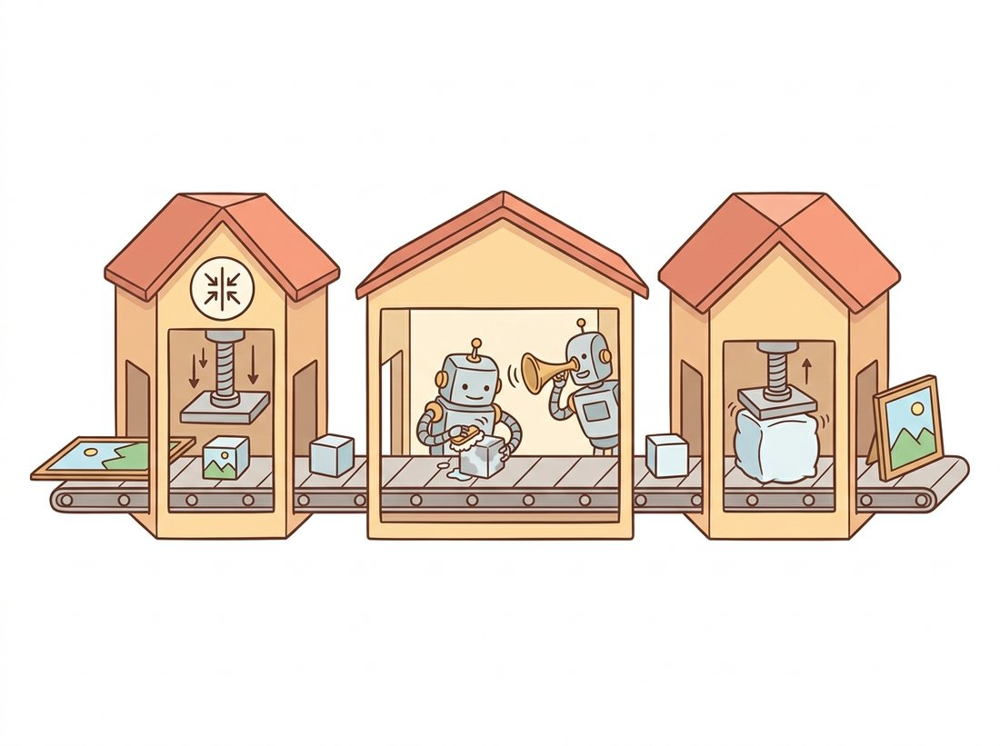

"I am three machines in a trench coat. The first shrinks the world, the second hallucinates inside the shrunken world while a sentence whispers in its ear, and the third blows the result back up to scale. Marketing calls all three of us 'Stable Diffusion'."
A Latent Diffusion Stack Maintaining a United Front
Stable Diffusion is three networks wired in series: an autoencoder that compresses pixels to a small latent, a denoiser (a U-Net or a diffusion transformer) that runs the diffusion process in that latent while cross-attending to text, and the same autoencoder's decoder that turns the finished latent back into pixels. Once you can name the three stations and the data tensor that flows between them, you can read any latent text-to-image system, debug it stage by stage, and understand exactly where the text gets to influence the image. This section dissects each station and then traces one full generation end to end in code.
In Section 34.1 we produced the conditioning sequence: a tensor of per-token text embeddings. This section is about the machine that consumes it. We assemble the three components of latent diffusion that Chapter 33 introduced separately, show how cross-attention threads the text through the denoiser, and run the assembled system so the abstract pipeline becomes a concrete sequence of tensor shapes.
1. Three Stations and the Tensor Between Them Beginner
The architecture is a pipeline, and Figure 34.2.1 is the map. Text goes into the frozen encoder of Section 34.1 and comes out as a conditioning sequence. A random latent is denoised by the U-Net over many steps, with the conditioning injected at every step through cross-attention. The finished latent is decoded to pixels by the VAE decoder. The pixel-space image never touches the denoiser; all the expensive iteration happens in the small latent, which is the entire reason latent diffusion fits on a consumer GPU. The cartoon below gives the same map a friendlier face: three machines in a row.

2. The Autoencoder: Compress, Then Decode Intermediate
The first and last stations are the same network: the variational autoencoder you built in Chapter 31, here used as a fixed perceptual compressor. Stable Diffusion's VAE maps a $512 \times 512 \times 3$ image to a $64 \times 64 \times 4$ latent, an eightfold spatial downsampling per side and a $48\times$ reduction in element count. The latent is not a semantic code; it is a near-lossless perceptual compression, trained with a combination of reconstruction loss, a small KL penalty toward a standard normal, and an adversarial term (the GAN discriminator of Chapter 32) that keeps decoded textures sharp. The diffusion process then runs entirely in this $64 \times 64 \times 4$ space.
The compression ratio is the lever. A diffusion step on a $64 \times 64$ grid costs a fraction of a step on a $512 \times 512$ grid, so latent diffusion buys roughly an order-of-magnitude speedup over pixel diffusion at the same image resolution. There is a fixed scaling factor (0.18215 for the SD 1.x VAE) applied when moving between the VAE's natural output and the unit-variance scale the denoiser expects. The denoiser was trained on latents normalized to roughly unit variance, so it only behaves correctly when its input arrives at that same scale; forgetting the factor feeds it latents at the wrong magnitude and produces washed-out or over-saturated images, a classic first-day bug.
import torch
from diffusers import AutoencoderKL
from diffusers.utils import load_image
import torchvision.transforms.functional as TF
# Encode an image to the compact latent the denoiser works in, then
# decode it back, to make the eightfold-per-side compression concrete.
# The scaling_factor moves between VAE space and the denoiser's variance.
vae = AutoencoderKL.from_pretrained(
"stable-diffusion-v1-5/stable-diffusion-v1-5", subfolder="vae").eval()
img = load_image("https://huggingface.co/datasets/huggingface/"
"documentation-images/resolve/main/diffusers/cat.png")
x = TF.to_tensor(img.resize((512, 512))).unsqueeze(0) * 2 - 1 # to [-1, 1]
with torch.no_grad():
latent = vae.encode(x).latent_dist.sample() * vae.config.scaling_factor
recon = vae.decode(latent / vae.config.scaling_factor).sample
print("pixel input:", tuple(x.shape)) # (1, 3, 512, 512)
print("latent code:", tuple(latent.shape)) # (1, 4, 64, 64)
print("compression (elements):",
x.numel() // latent.numel(), "x")48x reduction reported by the last line. The scaling_factor rescales the latent to the variance the denoiser was trained on; the same factor is divided out before decoding.The print confirms the shapes promised in subsection 1: a $(1, 4, 64, 64)$ latent is what the denoiser actually sees. Everything in the next two subsections happens in this compact space.
The $64 \times 64 \times 4$ latent is tempting to read as a compact "concept space" where one channel means color and another means pose, so that editing a latent would edit meaning. It is not that. Stable Diffusion's VAE is trained only to reconstruct pixels, so its latent is a near-lossless perceptual compression that still encodes local appearance and texture, spatially aligned with the image, not disentangled semantics. The eightfold-per-side downsampling means each latent cell still corresponds to an $8 \times 8$ pixel patch; the latent is a smaller picture, not a description of one. The genuinely semantic step is the cross-attention to text in subsection 3, not the VAE. Expecting to find a "make it a cat" direction by poking VAE channels is a common dead end.
The magic number 0.18215 is one of the most copy-pasted constants in modern machine learning, and almost nobody who pastes it knows where it comes from. It is simply the standard deviation the SD 1.x team measured on their VAE latents, baked in once so the latent arrives at roughly unit variance for the denoiser. There is nothing sacred about it: SDXL uses a different value, SD3's 16-channel VAE uses another, and every "why are my images washed out" forum thread since 2022 has a decent chance of tracing back to someone who forgot it. Treat it as the units conversion it is, not a spell.
3. The Denoiser and Cross-Attention Advanced
The denoiser is the only learned, time-dependent part of the loop and the place the text exerts its influence. In classic Stable Diffusion it is a U-Net: the convolutional encoder-decoder with skip connections whose convolution lineage runs back to Chapter 3. The U-Net takes the noisy latent $z_t$, a timestep embedding $t$, and the text conditioning, and predicts the noise $\epsilon_\theta(z_t, t, c)$ to remove. What makes it text-aware are the cross-attention blocks inserted at several resolutions.
Cross-attention is the self-attention of Chapter 22 with the keys and values coming from a different source than the queries. Here the queries come from the image latent (each spatial position asks a question) and the keys and values come from the text conditioning sequence (each word offers an answer):
$$ \text{CrossAttn}(Q_{\text{image}}, K_{\text{text}}, V_{\text{text}}) = \text{softmax}\!\left(\frac{Q_{\text{image}} K_{\text{text}}^\top}{\sqrt{d}}\right) V_{\text{text}}. $$
Each spatial location in the latent computes an attention distribution over the prompt's tokens and pulls in a weighted blend of their value vectors. This is precisely how the word "fox" can influence the latent positions that will become the fox and leave the background tokens to influence the snow. The attention maps are interpretable: visualizing the attention weight from the "fox" token to every spatial position produces a soft segmentation of where the model is placing the fox, which is the hook that later editing methods in Chapter 35 grab onto.
import torch, torch.nn.functional as F
from torch import nn
# Cross-attention is where text enters the denoiser: image-latent
# positions form the queries, the text tokens form keys and values,
# so every spatial cell pulls in a weighted blend of word vectors.
class CrossAttention(nn.Module):
"""Image-latent queries attend to text keys/values (single head, for clarity)."""
def __init__(self, img_dim, txt_dim, d):
super().__init__()
self.to_q = nn.Linear(img_dim, d, bias=False) # from image latent
self.to_k = nn.Linear(txt_dim, d, bias=False) # from text conditioning
self.to_v = nn.Linear(txt_dim, d, bias=False)
self.scale = d ** -0.5
def forward(self, x, context):
# x: (B, HW, img_dim) spatial tokens; context: (B, L, txt_dim) text tokens
q, k, v = self.to_q(x), self.to_k(context), self.to_v(context)
attn = (q @ k.transpose(-2, -1)) * self.scale # (B, HW, L)
attn = attn.softmax(dim=-1) # each pixel over words
return attn @ v, attn # also return the maps
ca = CrossAttention(img_dim=320, txt_dim=768, d=320)
latent_tokens = torch.randn(1, 64 * 64, 320) # flattened 64x64 latent
text_ctx = torch.randn(1, 77, 768) # CLIP conditioning
out, maps = ca(latent_tokens, text_ctx)
print("output:", tuple(out.shape), "attention maps:", tuple(maps.shape))maps of shape (1, 4096, 77) are the per-word spatial attention that editing tools later manipulate. Expected output: output: (1, 4096, 320) attention maps: (1, 4096, 77).A Stable Diffusion U-Net block contains both. Self-attention lets spatial positions talk to each other (global coherence: the two ears of the fox agree). Cross-attention lets every spatial position consult the prompt (semantic control: the ears belong to a fox, not a cat). Removing self-attention destroys global structure; removing cross-attention severs the text entirely and you get an unconditional generator. The text-to-image capability lives in exactly one place, the cross-attention keys and values, which is why the editing methods of the next chapter intervene there.
3.1 From U-Net to Diffusion Transformer
The U-Net is not the only choice of denoiser. The diffusion transformer (DiT) of Chapter 33 replaces the convolutional backbone with a pure transformer: the latent is split into patches, flattened into a token sequence, and processed by transformer blocks. DiT scales more predictably than the U-Net (its quality improves smoothly with compute, the same scaling behavior that drove the language-model era) and it folds text conditioning in naturally because it already speaks tokens. SD3 and FLUX use a DiT variant, MMDiT, in which image tokens and text tokens flow through the same attention blocks as a joint sequence rather than the image querying the text from a separate stream. The denoiser's job, predict the noise given the noisy latent, timestep, and text, is identical; only the internal wiring changes.
4. One Full Generation, Traced Intermediate
We now assemble the three stations into a single manual generation, calling the components directly rather than the convenience pipeline, so every tensor that crosses a station boundary is visible. This is the code to read when a pipeline misbehaves and you need to inspect an intermediate.
import torch
from diffusers import (StableDiffusionPipeline, UNet2DConditionModel,
AutoencoderKL, DDIMScheduler)
from transformers import CLIPTokenizer, CLIPTextModel
# Run the three stations by hand instead of through a pipeline, so every
# tensor that crosses a station boundary (encoder, U-Net loop, VAE) is
# visible. This is the version to read when a generation misbehaves.
device, dtype = "cuda", torch.float16
repo = "stable-diffusion-v1-5/stable-diffusion-v1-5"
tok = CLIPTokenizer.from_pretrained(repo, subfolder="tokenizer")
enc = CLIPTextModel.from_pretrained(repo, subfolder="text_encoder").to(device, dtype)
unet = UNet2DConditionModel.from_pretrained(repo, subfolder="unet").to(device, dtype)
vae = AutoencoderKL.from_pretrained(repo, subfolder="vae").to(device, dtype)
sched = DDIMScheduler.from_pretrained(repo, subfolder="scheduler")
prompt = "a red fox sitting in fresh snow, sharp focus, soft daylight"
guidance = 7.5
# 1. Encode prompt and an empty string for classifier-free guidance.
def embed(text):
ids = tok(text, padding="max_length", max_length=77,
truncation=True, return_tensors="pt").input_ids.to(device)
return enc(ids)[0]
cond, uncond = embed(prompt), embed("")
ctx = torch.cat([uncond, cond]) # (2, 77, 768)
# 2. Start from pure latent noise and set the denoising schedule.
sched.set_timesteps(30, device=device)
z = torch.randn(1, 4, 64, 64, device=device, dtype=dtype) * sched.init_noise_sigma
# 3. The denoising loop.
for t in sched.timesteps:
inp = sched.scale_model_input(torch.cat([z, z]), t) # duplicate for CFG
with torch.no_grad():
eps_u, eps_c = unet(inp, t, encoder_hidden_states=ctx).sample.chunk(2)
eps = eps_u + guidance * (eps_c - eps_u) # classifier-free guidance
z = sched.step(eps, t, z).prev_sample
# 4. Decode the final latent to pixels.
with torch.no_grad():
img = vae.decode(z / vae.config.scaling_factor).sample
print("final latent:", tuple(z.shape), "-> image:", tuple(img.shape))final latent: (1, 4, 64, 64) -> image: (1, 3, 512, 512).
That loop is the whole system. Every named product in Section 34.3 is a variation on it: a different encoder feeding ctx, a different denoiser computing eps, a different scheduler stepping z. The classifier-free guidance blend in step 3 is the prompt-strength control that Section 34.5 dissects.
The 40-line manual generation above is exactly what a pipeline call performs internally. Reach for the manual version only when you need an intermediate latent, a custom guidance schedule, or to inject something into cross-attention.
# The same forty lines of manual generation, packed into one call:
# the pipeline runs the encoder, the CFG-duplicated denoising loop,
# the scaling factor, and the VAE decode internally.
from diffusers import StableDiffusionPipeline
import torch
pipe = StableDiffusionPipeline.from_pretrained(
"stable-diffusion-v1-5/stable-diffusion-v1-5", torch_dtype=torch.float16).to("cuda")
image = pipe("a red fox sitting in fresh snow, sharp focus",
num_inference_steps=30, guidance_scale=7.5).images[0]Who: A small studio building a custom Stable Diffusion serving stack instead of using the stock pipeline, for tighter latency control.
Situation: Their hand-written denoising loop produced images that were recognizably correct in content but consistently flat: low contrast, milky colors, as if shot through fog.
Problem: They had omitted the VAE scaling factor on decode. They divided by it on encode but multiplied (rather than divided) on decode, so the latent handed to the decoder was off by a factor of 0.18215^2. The decoder still produced a plausible image because the VAE is robust, but the dynamic range was crushed.
Decision: They added a single assertion comparing their manual latents against the stock pipeline's latents on a fixed seed, which immediately localized the discrepancy to the decode step.
Result: One corrected line restored full contrast. The fixed-seed parity check against the reference pipeline became a permanent regression test for every future change to the custom loop.
Lesson: When building a generation loop by hand, validate each station against the reference implementation on a fixed seed. The scaling factor between VAE space and denoiser space is the single most common silent bug, and the symptom (plausible but degraded images) hides it.
The denoiser architecture is in active flux through 2024 to 2026. The MMDiT block of SD3 (Esser et al., 2024) and the FLUX transformer (Black Forest Labs, 2024) have largely displaced the U-Net at the frontier, because joint image-text attention scales better and follows prompts more faithfully than a U-Net querying a separate text stream. PixArt-alpha and PixArt-sigma (2023 to 2024) showed a DiT can reach competitive quality at a fraction of the training cost by reusing a strong T5 encoder and a cross-attention DiT. On the autoencoder side, work on higher-channel and higher-compression VAEs (the 16-channel autoencoders in SD3 and FLUX) recovered the fine detail the older four-channel VAE blurred, demonstrating that the perceptual compressor of subsection 2, long treated as fixed infrastructure, is itself a lever for image quality.
The pipeline runs the denoising loop in latent space and calls the VAE decoder exactly once, at the end. (a) Estimate the relative cost of decoding at every one of 30 steps versus decoding once, given the 48-fold element reduction of the latent. (b) Some tools show a live preview that decodes intermediate latents anyway; explain what that preview costs and why it is acceptable for a UI but not for the core loop. (c) Argue why running the diffusion process in pixel space would not just be slower but would also change what the denoiser must learn.
Register forward hooks on the cross-attention layers of a diffusers U-Net to capture the attention maps during a generation (the maps tensor of subsection 3, but from the real model). For the prompt "a cat wearing a tiny hat", extract the attention from the "cat" and "hat" tokens, average over heads and the highest-resolution block, and overlay each as a heatmap on the generated image. Do the maps localize where the model placed each object? Then swap to "a hat wearing a tiny cat" and report how the maps and the image change.
Using published FID-versus-compute numbers from the DiT paper and the SD3 paper, compare how U-Net and DiT denoisers scale with model size on the same latent diffusion task. FID, the Frechet Inception Distance, is the feature-space distribution metric defined in Section 30.6, where lower means the generated set is closer to the real set. (a) Plot quality against parameter count for both families. (b) Identify the crossover region where DiT overtakes the U-Net and relate it to the architectural argument in subsection 3.1. (c) Given a fixed training budget that is small (a few GPU-days), which backbone would you choose for a domain-specific generator, and what changes your answer as the budget grows?